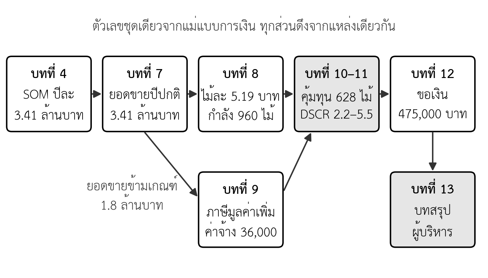

บทที่ 13 บทสรุปผู้บริหาร การนำเสนอ และการทบทวนแผน
เมื่อศึกษาบทนี้จบแล้ว นิสิตสามารถ
- เขียนบทสรุปผู้บริหารที่สรุปแผนทั้งเล่มได้ในไม่เกินสองหน้า
- จัดทำ Pitch Deck ตามโครงที่กำหนด โดยทุกสไลด์มีข้อความหลักและหลักฐานจากแผนได้
- เตรียมการนำเสนอและการตอบคำถามโดยอ้างข้อมูลในแผนได้
- เทียบตัวเลขสำคัญระหว่างส่วนต่าง ๆ ของแผนให้ตรงกันทั้งเล่มได้
- ใช้รูบริกของรายวิชาตรวจแผนของกลุ่มก่อนส่งได้
- อธิบายวิธีติดตามผลจริงเทียบแผน และเงื่อนไขที่ต้องปรับแผนได้
- ระบุหลักฐานที่แสดงว่าแผนของกลุ่มไปถึงเป้าหมายหรือยังได้
ความนำ
บทที่ 1 ถึงบทที่ 12 สร้างแผนธุรกิจทีละส่วน ตั้งแต่ปัญหาและโมเดลธุรกิจ ลูกค้า ตลาด คู่แข่ง เส้นทางสู่เป้าหมาย แผนการตลาด การดำเนินงาน องค์กร การเงิน ไปจนถึงแหล่งเงินทุน บทสุดท้ายนี้ทำสามเรื่องที่ต้องทำหลังจากทุกส่วนเสร็จแล้ว เรื่องแรก สรุปแผนทั้งเล่มให้ผู้อ่านเข้าใจได้ในเวลาสั้น ด้วยบทสรุปผู้บริหารและการนำเสนอ เรื่องที่สอง ตรวจว่าทุกส่วนของแผนสอดคล้องกัน เรื่องที่สาม เตรียมให้แผนใช้งานได้ต่อหลังจากเริ่มดำเนินงานจริง
บทนี้ยังกลับไปที่คำถามแรกของรายวิชา ถ้าหมูปิ้งอาจารย์ตั้มจะขายให้ได้วันละ 3 ล้านบาท แผนธุรกิจต้องเป็นอย่างไร หลังจากสิบสองบท คำตอบไม่ได้อยู่ที่ตัวเลข 3 ล้านบาท แต่อยู่ที่เส้นทาง ด่านตรวจ และหลักฐานที่ทำให้ผู้อ่านแผนเชื่อว่าแต่ละก้าวทำได้จริง หรือรู้ว่าควรหยุดเมื่อใด
13.1 บทสรุปผู้บริหาร
13.1.1 หน้าที่ของบทสรุปผู้บริหาร
บทสรุปผู้บริหาร (executive summary) คือส่วนแรกของแผนธุรกิจที่สรุปสาระของแผนทั้งเล่มในไม่เกินสองหน้า ผู้อ่านแผนจำนวนมากอ่านเพียงส่วนนี้ก่อนตัดสินใจว่าจะอ่านต่อหรือไม่ บทสรุปผู้บริหารจึงต้องตอบคำถามหลักของผู้อ่านได้ครบโดยไม่ต้องเปิดส่วนอื่น และต้องเขียนหลังสุด เพราะสรุปสิ่งที่ส่วนอื่นพิสูจน์แล้ว ไม่ใช่สิ่งที่ผู้เขียนหวังว่าจะเป็น
ข้อผิดพลาดที่พบบ่อยที่สุดคือการเขียนบทสรุปผู้บริหารเป็นบทนำ ซึ่งเล่าว่าแผนจะพูดถึงอะไร แทนการบอกว่าแผนสรุปอะไร ประโยคเช่น "แผนนี้จะวิเคราะห์ตลาดและเสนอกลยุทธ์" ไม่ได้ให้ข้อมูลใดแก่ผู้อ่าน ส่วนประโยค "ตลาดที่ร้านเข้าถึงได้มีมูลค่าปีละ 3.4 ล้านบาท ร้านทดสอบที่สองทำเลแล้วขายได้วันละ 248 ถึง 255 ไม้" บอกทั้งผลและหลักฐาน
13.1.2 โครงของบทสรุปผู้บริหาร
บทสรุปผู้บริหารของแผนในรายวิชานี้ควรมีเจ็ดส่วน เรียงตามลำดับที่ผู้อ่านต้องการรู้ แต่ละส่วนยาวหนึ่งย่อหน้าสั้น ๆ และต้องมีตัวเลขหรือหลักฐานอย่างน้อยหนึ่งรายการ (ตารางที่ 13.1)
ตารางที่ 13.1 โครงของบทสรุปผู้บริหาร
| ส่วน | ตอบคำถาม | ที่มาในแผน |
|---|---|---|
| ธุรกิจและโอกาส | ธุรกิจทำอะไร แก้ปัญหาของใคร | ส่วนที่ 2 และบทที่ 2–3 |
| ลูกค้าและตลาด | ตลาดใหญ่เท่าใด มีหลักฐานว่าลูกค้าต้องการหรือไม่ | บทที่ 3–4 |
| ความได้เปรียบ | ทำไมลูกค้าจะเลือกธุรกิจนี้ | บทที่ 5–6 |
| เป้าหมายและเส้นทาง | จะไปที่ไหน ผ่านระยะและด่านตรวจใด | บทที่ 6 |
| แผนดำเนินงานและทีม | ทำได้จริงหรือไม่ ใครทำ | บทที่ 7–9 |
| ผลทางการเงิน | กำไร จุดคุ้มทุน เงินสด และความเสี่ยง | บทที่ 10–11 |
| สิ่งที่ขอ | ต้องการเงินเท่าใด ใช้ทำอะไร คืนอย่างไร | บทที่ 12 |
13.2 ตัวอย่างบทสรุปผู้บริหารของกรณีศึกษา
13.2.1 บทสรุปผู้บริหารฉบับธนาคาร
ตารางที่ 13.2 เป็นตัวอย่างบทสรุปผู้บริหารของแผนระยะที่ 1 ที่หมูปิ้งอาจารย์ตั้ม (กรณีศึกษาสมมติ) ยื่นต่อธนาคาร ตัวเลขทุกตัวมาจากบทก่อนหน้า นิสิตควรสังเกตสามเรื่อง คือ ทุกส่วนมีตัวเลข ข้อความระบุชัดว่าอะไรเป็นข้อเท็จจริงและอะไรเป็นประมาณการ และบทสรุปไม่ซ่อนข้อจำกัด เช่น ส่วนเกินปลอดภัยที่แคบ
ตารางที่ 13.2 ตัวอย่างบทสรุปผู้บริหาร แผนขยายระยะที่ 1 ของหมูปิ้งอาจารย์ตั้ม (กรณีศึกษาสมมติ)
| ส่วน | ข้อความ |
|---|---|
| ธุรกิจและโอกาส | หมูปิ้งอาจารย์ตั้มเป็นร้านอาหารเช้าหน้าโรงเรียนในอำเภอเมืองมหาสารคาม ดำเนินการมาสามปี ขายวันละ 300 ไม้ ยอดขายปีละ 1.31 ล้านบาท แผนนี้ขอขยายเป็นสามสาขาพร้อมครัวกลาง เพื่อรักษารสชาติมาตรฐานเดียวกันและลดต้นทุนต่อไม้ |
| ลูกค้าและตลาด | ลูกค้าหลักคือนักเรียนและคนทำงานที่สั่งอาหารเช้าให้สำนักงาน การสัมภาษณ์พบว่าคนทำงาน 5 ใน 6 รายมีปัญหาต้องต่อคิว ตลาดที่ร้านเข้าถึงได้ประมาณปีละ 3.4 ล้านบาท |
| ความได้เปรียบ | ร้านวางตำแหน่งเป็นชุดอาหารเช้าสั่งล่วงหน้าสำหรับสำนักงาน ซึ่งคู่แข่งรายย่อยไม่รับ และมีสูตรหมักที่รักษาเป็นความลับ ร้านไม่แข่งด้านราคา |
| เป้าหมายและเส้นทาง | เป้าหมายระยะยาวคือยอดขายทั้งระบบวันละ 3 ล้านบาทในปี 2579 ผ่านสามระยะ แผนนี้เป็นระยะที่ 1 ซึ่งผ่านด่าน 0 แล้ว โดยขายทดลองที่สองโรงเรียนได้วันละ 255 และ 248 ไม้ และอีกหนึ่งโรงเรียนไม่ผ่าน จึงเปลี่ยนทำเล |
| แผนดำเนินงานและทีม | ครัวกลางผลิตได้สูงสุดวันละ 960 ไม้ รองรับเดือนที่ขายดีที่สุด 858 ไม้ ต้นทุนต่อไม้ลดจาก 5.50 เป็น 5.19 บาท เมื่อคุมของเสียไม่เกินร้อยละ 1 มีพนักงานเพิ่ม 6 คน และใช้สำนักงานบัญชีภายนอก ร้านจดทะเบียนภาษีมูลค่าเพิ่มก่อนเปิดสาขาใหม่ |
| ผลทางการเงิน | ปีปกติ 2571 มีกำไรก่อนภาษีประมาณ 298,000 บาท หลังจ่ายค่าตอบแทนเจ้าของ จุดคุ้มทุนวันละ 628 ไม้ ส่วนเกินปลอดภัยร้อยละ 19.5 ช่วงเมษายนถึงมิถุนายน 2570 ขาดทุนสามเดือนตามแผน แต่เงินสดต่ำสุดไม่ต่ำกว่าประมาณ 94,000 บาทแม้ในกรณีแย่ |
| สิ่งที่ขอ | ขอสินเชื่อ 300,000 บาท ระยะ 5 ปี สำหรับครัวกลางและอุปกรณ์สาขา เจ้าของลงเงิน 150,000 บาท ความสามารถชำระหนี้ (DSCR) กรณีฐาน 5.46 กรณีต่ำ 2.20 และมีแผนสำรองเป็นขั้นที่ผูกกับยอดขายรายเดือน |
13.2.2 ผู้อ่านต่างกัน ลำดับความสำคัญต่างกัน
บทสรุปผู้บริหารฉบับเดียวไม่เหมาะกับผู้อ่านทุกกลุ่ม ธนาคารต้องการเห็นความสามารถชำระหนี้ก่อน ส่วนผู้ลงทุนต้องการเห็นขนาดของโอกาสและการเติบโตก่อน ข้อเท็จจริงในแผนไม่ต้องเปลี่ยน แต่ลำดับและน้ำหนักของบทสรุปควรปรับตามผู้อ่าน (บทที่ 1) ตารางที่ 13.3 เปรียบเทียบบทสรุปผู้บริหารของกรณีศึกษาสำหรับผู้อ่านสองกลุ่ม
ตารางที่ 13.3 บทสรุปผู้บริหารสำหรับธนาคารและผู้ลงทุน (กรณีศึกษาสมมติ)
| ประเด็น | ฉบับธนาคาร (ระยะที่ 1) | ฉบับผู้ลงทุน (ระยะที่ 3) |
|---|---|---|
| ประโยคแรก | ร้านดำเนินการมาสามปี ขอสินเชื่อ 3 แสนบาทเพื่อขยายเป็นสามสาขา | ธุรกิจหมูหมักแช่แข็งที่มีเครือข่ายแฟรนไชส์ 100 ร้านและพิสูจน์ยอดขายในร้านค้าปลีกแล้ว |
| ตัวเลขที่เน้น | DSCR เงินสดต่ำสุด หลักประกัน | ขนาดตลาดระดับประเทศ อัตราการเติบโต กำไรของร้านแฟรนไชส์ |
| หลักฐานที่เน้น | ประวัติยอดขายจริงและผลขายทดลอง | ผลของด่าน 1 และด่าน 2 |
| ความเสี่ยงที่ต้องพูดถึง | กรณีต่ำและแผนสำรองเพื่อรักษาการผ่อนชำระ | ความเสี่ยงของการแข่งขันในร้านค้าปลีกและการบริหารโรงงาน |
| ส่วนสุดท้าย | วงเงินกู้ ระยะเวลา และการรายงานผล | เงินที่ต้องการ สัดส่วนหุ้น และวิธีได้เงินคืน |
13.3 Pitch Deck
13.3.1 โครงของ Pitch Deck
Pitch Deck คือชุดสไลด์สั้นที่ใช้นำเสนอแผนธุรกิจต่อผู้ให้เงินหรือคณะกรรมการ Pitch Deck ไม่ใช่เล่มแผนฉบับย่อที่ตัดข้อความมาวางบนสไลด์ แต่เป็นเรื่องเล่าที่ทุกสไลด์มีข้อความหลักหนึ่งข้อ และมีหลักฐานจากแผนรองรับ สำหรับ Pitch ในสัปดาห์ที่ 16 ซึ่งมีเวลา 10 นาที แผนควรมีประมาณ 12 สไลด์ หรือเฉลี่ยไม่ถึงหนึ่งนาทีต่อสไลด์ ตารางที่ 13.4 แสดงโครงที่แนะนำ พร้อมข้อความหลักของกรณีศึกษา
ตารางที่ 13.4 โครง Pitch Deck 12 สไลด์และข้อความหลักของกรณีศึกษา (กรณีศึกษาสมมติ)
| สไลด์ | หัวข้อ | ข้อความหลักของกรณีศึกษา | ที่มา |
|---|---|---|---|
| 1 | ชื่อและสิ่งที่ขอ | หมูปิ้งรสเดียวกันทุกสาขา ขอสินเชื่อ 3 แสนบาทเพื่อขยายเป็นสามสาขา | บทที่ 12 |
| 2 | ปัญหา | คนทำงานต้องต่อคิวและได้ของผิดรายการเมื่อสั่งให้ทั้งสำนักงาน | บทที่ 3 |
| 3 | ทางออกและหลักฐาน | สั่งล่วงหน้าทาง LINE ครบในครั้งเดียว สำนักงานสั่งซ้ำ 7 แห่งในสองสัปดาห์ | บทที่ 3 และ 6 |
| 4 | ตลาด | ตลาดที่เข้าถึงได้ปีละ 3.4 ล้านบาท | บทที่ 4 |
| 5 | คู่แข่งและตำแหน่ง | ไม่แข่งราคา ชนะด้วยบริการสั่งกลุ่ม | บทที่ 5 |
| 6 | โมเดลธุรกิจ | Canvas หนึ่งหน้า และสิ่งที่เปลี่ยนเมื่อมีครัวกลาง | บทที่ 2 |
| 7 | เส้นทางและด่านตรวจ | สามระยะสู่วันละ 3 ล้านบาท ผ่านด่าน 0 แล้ว | บทที่ 6 |
| 8 | แผนการตลาดและยอดขาย | ประมาณการรายเดือนที่รวมฤดูกาลและการไต่ระดับ | บทที่ 7 |
| 9 | การดำเนินงานและทีม | ครัวกลางรองรับเดือนสูงสุด คอขวดคือการเสียบไม้ มีผู้ทำแทน | บทที่ 8–9 |
| 10 | การเงิน | กำไรปีปกติ จุดคุ้มทุน 628 ไม้ เงินสดไม่ติดลบ | บทที่ 10–11 |
| 11 | ความเสี่ยง | กรณีแย่ยังจ่ายค่างวดได้ และแผนสำรองเป็นขั้น | บทที่ 11 |
| 12 | สิ่งที่ขอและสิ่งที่ผู้ให้เงินได้ | ใช้เงินอย่างไร คืนอย่างไร และรายงานผลเมื่อใด | บทที่ 12 |
13.3.2 หลักการออกแบบสไลด์
สไลด์ที่ดีให้ผู้ฟังเข้าใจข้อความหลักได้ภายในไม่กี่วินาที หลักที่ใช้ได้กับทุกสไลด์มีสี่ข้อ ข้อแรก หัวสไลด์เป็นประโยคที่บอกข้อสรุป ไม่ใช่คำนาม เช่น ใช้ "ครัวกลางรองรับเดือนที่ขายดีที่สุดได้" แทน "แผนการดำเนินงาน" ข้อที่สอง ใช้ตัวเลขหรือภาพแทนข้อความยาว ข้อที่สาม ตัวเลขทุกตัวต้องตรงกับเล่มแผน ข้อที่สี่ เตรียมสไลด์สำรองไว้หลังสไลด์สุดท้ายสำหรับตอบคำถามที่คาดไว้ เช่น ตารางกระแสเงินสดรายเดือนและสามสถานการณ์ ซึ่งไม่ต้องแสดงในการนำเสนอหลัก แต่ช่วยให้ตอบคำถามด้วยหลักฐานได้ทันที
13.3.3 หัวสไลด์ที่ดีและไม่ดี
หัวสไลด์เป็นสิ่งแรกที่ผู้ฟังอ่าน ถ้าหัวสไลด์บอกข้อสรุป ผู้ฟังจะเข้าใจสไลด์แม้ไม่ได้อ่านรายละเอียด ตารางที่ 13.5 แสดงตัวอย่างการแก้หัวสไลด์ของกรณีศึกษา จากหัวข้อแบบคำนามเป็นประโยคข้อสรุป
ตารางที่ 13.5 ตัวอย่างการแก้หัวสไลด์ (กรณีศึกษาสมมติ)
| หัวสไลด์แบบคำนาม | หัวสไลด์แบบข้อสรุป |
|---|---|
| ปัญหาของลูกค้า | คนทำงาน 5 ใน 6 คนต้องต่อคิวเมื่อซื้อให้ทั้งสำนักงาน |
| การวิเคราะห์ตลาด | ตลาดที่ร้านเข้าถึงได้มีมูลค่าปีละ 3.4 ล้านบาท |
| คู่แข่ง | คู่แข่งรายย่อยไม่รับสั่งกลุ่ม ร้านจึงไม่ต้องแข่งราคา |
| แผนการดำเนินงาน | ครัวกลางรองรับเดือนที่ขายดีที่สุดได้ คอขวดคือการเสียบไม้ |
| จุดคุ้มทุน | ร้านคุ้มทุนที่วันละ 628 ไม้ แผนขาย 780 ไม้ |
| กระแสเงินสด | ขาดทุนสามเดือนแรกตามแผน แต่เงินสดไม่ติดลบแม้ในกรณีแย่ |
| ความต้องการเงินทุน | ขอสินเชื่อ 3 แสนบาท ผ่อนได้ 2.2 เท่าของค่างวดแม้ในกรณีต่ำ |
13.4 การนำเสนอและการตอบคำถาม
13.4.1 ผู้ฟังให้น้ำหนักกับอะไร
งานวิจัยให้ข้อสังเกตที่สำคัญเกี่ยวกับการนำเสนอ Kirsch และคณะ (2009) พบว่าเอกสารแผนธุรกิจสัมพันธ์กับการตัดสินใจให้ทุนของผู้ลงทุนร่วมเพียงเล็กน้อย ซึ่งชี้ว่าผู้ลงทุนใช้ข้อมูลจากช่องทางอื่นด้วย รวมทั้งการพบและการนำเสนอ Chen และคณะ (2009) ศึกษาการนำเสนอแผนธุรกิจต่อผู้ลงทุน ทั้งในการทดลองและในการแข่งขันแผนธุรกิจจริง และพบว่าความพร้อมของผู้นำเสนอ ไม่ใช่ความกระตือรือร้นที่แสดงออก ที่มีผลเชิงบวกต่อการตัดสินใจให้ทุน
ข้อค้นพบนี้สอดคล้องกับรูบริกการนำเสนอของรายวิชา ซึ่งให้น้ำหนักกับหลักฐานและตัวเลขสนับสนุนร้อยละ 20 และการตอบคำถามอีกร้อยละ 20 ผู้นำเสนอที่พูดคล่องแต่ตอบคำถามเรื่องตัวเลขไม่ได้ จะได้คะแนนน้อยกว่าผู้ที่พูดเรียบ ๆ แต่ชี้ไปที่หลักฐานในแผนได้ทุกคำถาม ความพร้อมจึงไม่ได้หมายถึงการท่องบท แต่หมายถึงการเข้าใจแผนของตนเองทุกส่วน
13.4.2 ข้อผิดพลาดที่พบบ่อยในการนำเสนอ
ตารางที่ 13.6 รวบรวมข้อผิดพลาดที่พบบ่อยในการนำเสนอแผนธุรกิจของนิสิต พร้อมวิธีแก้ ซึ่งใช้ในการซ้อม Pitch ในสัปดาห์ที่ 15 ได้
ตารางที่ 13.6 ข้อผิดพลาดที่พบบ่อยในการนำเสนอและวิธีแก้
| ข้อผิดพลาด | ผลที่เกิด | วิธีแก้ |
|---|---|---|
| ใช้เวลาครึ่งหนึ่งกับปัญหาและตลาด | ไม่มีเวลาพูดเรื่องการเงินและสิ่งที่ขอ | ซ้อมจับเวลา และกำหนดเวลาของแต่ละสไลด์ |
| อ่านข้อความบนสไลด์ | ผู้ฟังอ่านเร็วกว่าผู้พูด และเลิกฟัง | สไลด์มีข้อความหลักสั้น ผู้พูดอธิบายหลักฐาน |
| ตัวเลขในสไลด์ไม่ตรงกับเล่ม | ผู้ฟังไม่เชื่อตัวเลขอื่นทั้งหมด | ตรวจตามตารางที่ 13.8 ก่อนนำเสนอ |
| ตอบคำถามโดยไม่อ้างแผน | ฟังเหมือนความเห็นส่วนตัว | ตอบพร้อมบอกว่าหลักฐานอยู่ส่วนใด |
| ปฏิเสธข้อจำกัดของแผน | ผู้ฟังมองว่าไม่เข้าใจความเสี่ยง | ยอมรับและอธิบายแผนสำรอง |
| สมาชิกทุกคนพูดเท่ากันโดยไม่มีเหตุผล | การส่งต่อไม่ราบรื่น | แบ่งตามความรับผิดชอบจริงในแผน |
13.4.3 เตรียมคำถามล่วงหน้า
ทีมควรเขียนรายการคำถามที่คาดว่าจะถูกถาม แล้วกำหนดผู้ตอบและหลักฐานที่ใช้ตอบไว้ล่วงหน้า วิธีที่ใช้ได้ดีคือให้กลุ่มอื่นอ่านเล่มแผนแล้วตั้งคำถามที่ยากที่สุดห้าข้อ ตารางที่ 13.7 แสดงคำถามที่คณะกรรมการมักถามในการ Pitch ของรายวิชา พร้อมแนวทางตอบที่อ้างหลักฐานในแผน
ตารางที่ 13.7 คำถามที่คณะกรรมการมักถามและแนวทางตอบ (กรณีศึกษาสมมติ)
| คำถาม | แนวทางตอบ | หลักฐานในแผน |
|---|---|---|
| ตัวเลขยอดขายมาจากไหน | อธิบายห่วงโซ่ตัวคูณ ดัชนีฤดูกาล และการไต่ระดับ | ตารางข้อสมมติในบทที่ 7 |
| ถ้าขายไม่ได้ตามแผน จะเป็นอย่างไร | บอกจุดคุ้มทุน ส่วนเกินปลอดภัย และกรณีต่ำ | บทที่ 10 และ 11 |
| ทำไมคู่แข่งจะเลียนแบบไม่ได้ | ยอมรับส่วนที่เลียนแบบได้ และชี้ความได้เปรียบที่เหลือ | VRIO ในบทที่ 6 |
| ทีมมีความสามารถพอหรือไม่ | บอกช่องว่างของทักษะและวิธีปิด | ตารางทักษะในบทที่ 9 |
| เงินที่ขอพอหรือไม่ | แสดงแผนการใช้เงินและเงินทุนหมุนเวียนจากกรณีต่ำ | บทที่ 12 |
| ตัวเลขใดไม่มั่นใจที่สุด | ตอบตรง ๆ และบอกว่าจะพิสูจน์อย่างไร | ด่านตรวจในบทที่ 6 |
| ถ้าไม่ถึงเป้าหมายจะทำอย่างไร | อธิบายทางเลือกเมื่อไม่ผ่านด่านและแผนสำรอง | บทที่ 6 และ 11 |
13.5 ตรวจความสอดคล้องของแผนทั้งเล่ม
13.5.1 ตัวเลขชุดเดียวกันทั้งเล่ม
เกณฑ์ที่ 5 ของรูบริกเล่มแผนธุรกิจให้น้ำหนักความสอดคล้องของแผนทุกส่วนร้อยละ 10 ข้อผิดพลาดด้านความสอดคล้องเกิดง่ายที่สุดเมื่อแผนเขียนโดยหลายคน และตัวเลขถูกแก้ในส่วนหนึ่งแต่ไม่ได้แก้ในส่วนอื่น วิธีป้องกันที่ได้ผลคือมีแหล่งตัวเลขเพียงแหล่งเดียว เช่น ไฟล์แม่แบบการเงินของกลุ่ม แล้วทุกส่วนของแผนดึงตัวเลขจากแหล่งนั้น ภาพที่ 13.1 แสดงว่าตัวเลขสำคัญของกรณีศึกษาไหลผ่านบทต่าง ๆ อย่างไร

13.5.2 รายการตรวจความสอดคล้อง
ตารางที่ 13.8 เป็นรายการตรวจที่ใช้กับแผนของกลุ่มได้ทันที แต่ละแถวคือตัวเลขหนึ่งตัวที่ต้องตรงกันในทุกส่วนที่ปรากฏ ตารางที่ 13.9 แสดงผลการตรวจของกรณีศึกษา ซึ่งเป็นตัวอย่างว่าตัวเลขที่ "ไม่ตรงกัน" บางครั้งไม่ใช่ข้อผิดพลาด แต่ต้องมีคำอธิบายที่ผู้อ่านเข้าใจได้
ตารางที่ 13.8 รายการตรวจความสอดคล้องของแผนธุรกิจ
| ตัวเลขที่ต้องตรงกัน | ปรากฏในส่วน | คำถามที่ใช้ตรวจ |
|---|---|---|
| ยอดขาย | ตลาด การตลาด การเงิน บทสรุปผู้บริหาร | ยอดขายปีปกติไม่เกิน SOM และตรงกันทุกส่วนหรือไม่ |
| ราคาและต้นทุนต่อหน่วย | การตลาด การดำเนินงาน การเงิน | ใช้ราคาและต้นทุนเดียวกัน รวมผลของภาษีและของเสียหรือไม่ |
| กำลังการผลิต | การดำเนินงาน การเงิน | ยอดขายเดือนสูงสุดไม่เกินกำลังการผลิตหรือไม่ |
| จำนวนพนักงานและค่าจ้าง | การดำเนินงาน องค์กร การเงิน | คนในผังองค์กรตรงกับค่าจ้างในต้นทุนคงที่หรือไม่ |
| เงินลงทุน | การดำเนินงาน การเงิน แหล่งเงินทุน | รายการลงทุนรวมกันเท่ากับเงินที่ขอบวกเงินของเจ้าของหรือไม่ |
| ด่านตรวจและเกณฑ์ | กลยุทธ์ การเงิน ความเสี่ยง | เกณฑ์ของด่านใช้ตัวเลขเดียวกับประมาณการหรือไม่ |
ตารางที่ 13.9 ผลการตรวจความสอดคล้องของกรณีศึกษา (กรณีศึกษาสมมติ)
| ตัวเลข | ค่าในแผน | ปรากฏในบท | ผลการตรวจ |
|---|---|---|---|
| ยอดขายปีปกติ 2571 | 3,407,040 บาท (รวมภาษี) | 4, 7, 10, 11 | ตรงกับ SOM ในบทที่ 4 รายได้สุทธิในบทที่ 10–11 คือ 3,184,150 บาท เพราะหักภาษีมูลค่าเพิ่ม ต้องอธิบายในแผน |
| ต้นทุนต่อไม้ | 5.19 บาท | 8, 10, 11 | ตรงกัน บทที่ 7 ใช้ 5.50 บาทในการตั้งราคาก่อนมีครัวกลาง ต้องระบุว่าเป็นต้นทุนเดิม |
| กำลังการผลิต | 960 ไม้ต่อวัน รองรับ 858 ไม้ | 7, 8, 10 | ยอดขายเดือนสูงสุดอยู่ในกำลังการผลิต |
| พนักงานใหม่ | 6 คน ค่าจ้าง 36,000 บาทต่อเดือน | 8, 9, 10 | ตรงกันทั้งผังองค์กรและต้นทุนคงที่ |
| เงินที่ใช้ทั้งโครงการ | 475,000 บาท | 10, 11, 12 | เท่ากับเจ้าของ 150,000 สินเชื่อ 300,000 และเงินสดดำเนินงาน 25,000 |
| เกณฑ์ด่าน 1 | ต้นทุนต่อไม้ไม่เกิน 5.20 บาท สาขาใหม่ 240 ไม้ต่อวัน | 6, 8, 11 | ประมาณการใช้ 5.19 บาท และ 240 ไม้ ไม่มีส่วนเผื่อ ต้องระบุเป็นความเสี่ยง |
13.6 ประเมินแผนก่อนส่ง
ก่อนส่งเล่มฉบับสมบูรณ์ แต่ละกลุ่มควรประเมินแผนของตนเองด้วยเกณฑ์เดียวกับที่ผู้สอนใช้ รูบริกเล่มแผนธุรกิจใน มคอ.3 มีเจ็ดเกณฑ์ ตารางที่ 13.10 แปลงแต่ละเกณฑ์เป็นคำถามที่กลุ่มใช้ตรวจตนเองได้ และระบุว่าบทใดของเอกสารนี้ช่วยตอบ คำถามเหล่านี้สะท้อนหลักของรายวิชาว่าคะแนนให้ที่คุณภาพของเส้นทางและหลักฐาน ไม่ใช่ขนาดของเป้าหมาย
ตารางที่ 13.10 คำถามประเมินตนเองตามรูบริกเล่มแผนธุรกิจ
| เกณฑ์ (น้ำหนัก) | คำถามประเมินตนเอง | บทที่ช่วยตอบ |
|---|---|---|
| ปัญหา คุณค่า และโมเดลธุรกิจ (15%) | มีหลักฐานว่าลูกค้าเดือดร้อนจริงหรือไม่ Canvas ขยายเป็นแผนฉบับเต็มครบหรือไม่ | 2–3 |
| ลูกค้า ตลาด และคู่แข่ง (20%) | สัมภาษณ์อย่างน้อย 5 ราย ใช้ข้อมูลทุติยภูมิที่เชื่อถือได้ และคำนวณตลาดจากล่างขึ้นบนหรือไม่ | 3–5 |
| การตลาดและการดำเนินงาน (15%) | ประมาณการยอดขายมีที่มา และกระบวนการรองรับเดือนสูงสุดได้หรือไม่ | 7–8 |
| แผนการเงิน (20%) | จุดคุ้มทุนและกระแสเงินสด 12 เดือนถูกต้อง และมีกรณีต่ำหรือไม่ | 10–11 |
| ความสอดคล้อง (10%) | ตัวเลขทุกตัวในตารางที่ 13.8 ตรงกันหรือไม่ | 13 |
| การอ้างอิงและจรรยาบรรณ (10%) | ทุกข้อมูลมีแหล่งอ้างอิงตาม APA และแยกข้อเท็จจริงกับข้อสมมติหรือไม่ | 3–4 |
| บทสรุปผู้บริหารและรูปเล่ม (10%) | อ่านบทสรุปผู้บริหารแล้วเข้าใจทั้งแผนในสองหน้าหรือไม่ | 13 |
13.7 แผนที่มีชีวิต: ติดตามผลจริงเทียบแผน
13.7.1 แผนไม่ได้จบเมื่อส่ง
แผนธุรกิจที่ดีถูกใช้ต่อหลังจากธุรกิจเริ่มดำเนินงาน ทุกเดือน ผู้ประกอบการควรเปรียบเทียบผลจริงกับแผน ตัวเลขที่ต่างจากแผนเรียกว่าผลต่างจากแผน (variance) ผลต่างไม่ได้แปลว่าแผนผิดเสมอไป แต่เป็นสัญญาณให้ถามว่าผลต่างเกิดจากเหตุชั่วคราวหรือจากข้อสมมติที่ผิด ถ้าเกิดจากข้อสมมติที่ผิด ต้องแก้ข้อสมมตินั้นในแผน และแก้ทุกส่วนที่ใช้ตัวเลขนั้นด้วย ไม่ใช่แก้เฉพาะตัวเลขผลลัพธ์
13.7.2 ตัวอย่างการติดตามของกรณีศึกษา
ตารางที่ 13.11 แสดงผลจริงสามเดือนแรกหลังเปิดสาขาใหม่ของกรณีศึกษา (ตัวเลขสมมติ) เทียบกับประมาณการในบทที่ 11 และสัญญาณเตือนในบทที่ 11
ตารางที่ 13.11 ผลจริงเทียบแผน มิถุนายนถึงสิงหาคม 2570 (บาท กรณีศึกษาสมมติ)
| เดือน | ยอดขายตามแผน | ยอดขายจริง | ผลต่าง | ของเสียจริง | เงินสดตามแผน | เงินสดจริง |
|---|---|---|---|---|---|---|
| มิ.ย. | 235,435 | 221,800 | −5.8% | 1.6% | 114,189 | 104,900 |
| ก.ค. | 273,874 | 266,900 | −2.5% | 1.2% | 139,021 | 126,300 |
| ส.ค. | 312,312 | 309,500 | −0.9% | 0.9% | 181,133 | 166,800 |
คุณตั้มวิเคราะห์ผลต่างแล้วพบสองสาเหตุ สาเหตุแรก สาขาโรงเรียน ค เปิดช้ากว่าแผนสี่วัน ซึ่งเป็นเหตุชั่วคราว สาเหตุที่สอง ของเสียสูงในเดือนแรกเพราะพนักงานใหม่ ซึ่งลดลงเมื่อพนักงานชำนาญขึ้น ผลต่างของยอดขายแคบลงทุกเดือน และยอดขายรวมยังอยู่เหนือระดับเฝ้าระวังในตารางแผนสำรองของบทที่ 11 คุณตั้มจึงไม่ใช้แผนสำรอง แต่ปรับวิธีสั่งผลิตให้ตามออเดอร์ LINE มากขึ้น และบันทึกไว้ว่าเงินสดจริงต่ำกว่าแผนประมาณ 14,000 บาท ซึ่งต้องนำไปปรับประมาณการเงินสดของเดือนที่เหลือ การตัดสินใจแบบนี้ใช้หลักเดียวกับด่านตรวจในบทที่ 6 คือหาสาเหตุก่อนเลือกทางเลือก
13.7.3 รอบการทบทวนแผน
การติดตามแผนได้ผลเมื่อมีรอบที่ชัดเจน ว่าดูอะไร บ่อยเพียงใด และผลของการทบทวนคืออะไร ธุรกิจขนาดเล็กไม่ต้องมีการประชุมมาก แต่ต้องมีวินัยในการเปรียบเทียบตัวเลขจริงกับแผนอย่างสม่ำเสมอ (ตารางที่ 13.12)
ตารางที่ 13.12 รอบการทบทวนแผนของกรณีศึกษา (กรณีศึกษาสมมติ)
| รอบ | สิ่งที่ดู | ผู้ดู | ผลของการทบทวน |
|---|---|---|---|
| ทุกวัน | ยอดขายและของเสียของแต่ละสาขา | หัวหน้าสาขา หัวหน้าครัวกลาง | ปรับยอดสั่งผลิตวันถัดไป |
| ทุกสัปดาห์ | ตัวชี้วัดตามตารางในบทที่ 11 | คุณตั้ม | ตรวจสัญญาณเตือน |
| ทุกเดือน | ผลจริงเทียบประมาณการ เงินสด ภาษีที่ต้องนำส่ง | คุณตั้มและสำนักงานบัญชี | ปรับประมาณการเดือนที่เหลือ ตัดสินใจระดับของแผนสำรอง |
| ทุกสามเดือน | การชิมแบบไม่บอกสาขา ข้อสมมติหลัก | คุณตั้ม | แก้ข้อสมมติที่ผิดและทุกส่วนที่ใช้ |
| ที่ด่านตรวจ | เกณฑ์ของด่านทั้งหมด | คุณตั้ม ธนาคาร หรือผู้ลงทุน | ไปต่อ ปรับ เปลี่ยนเส้นทาง ขยายเวลา หรือหยุด |
13.8 กลับสู่โจทย์ของรายวิชา
13.8.1 คำตอบของคำถามแรก
รายวิชานี้เริ่มด้วยคำถามว่า ถ้าหมูปิ้งอาจารย์ตั้มจะขายให้ได้วันละ 3 ล้านบาท แผนธุรกิจต้องเป็นอย่างไร ตลอดสิบสองบท คำตอบสะสมทีละส่วน ตารางที่ 13.13 สรุปคำตอบนั้น โดยแยกให้เห็นว่าส่วนใดมีหลักฐานแล้ว และส่วนใดยังเป็นข้อสมมติที่ต้องพิสูจน์ในด่านถัดไป
ตารางที่ 13.13 คำตอบของโจทย์รายวิชา: แผนต้องเป็นอย่างไรจึงจะไปถึงวันละ 3 ล้านบาท (กรณีศึกษาสมมติ)
| สิ่งที่แผนต้องมี | คำตอบของกรณีศึกษา | สถานะของหลักฐาน |
|---|---|---|
| นิยามเป้าหมายที่ชัด | ยอดขายทั้งระบบ ไม่ใช่รายได้ของบริษัท | ตัดสินใจแล้ว |
| คิดย้อนกลับเป็นตัวเลขที่ต้องทำ | วันละประมาณ 214,286 ไม้ ต้องเป็นตลาดระดับประเทศ | คำนวณแล้ว |
| เส้นทางที่เลือกจากหลายทางเลือก | เส้นทางผสมสามระยะ | ตัดสินใจแล้วพร้อมเหตุผล |
| ระยะที่ 1 ทำได้จริง | สามสาขาและครัวกลาง | ผ่านด่าน 0 ผลจริงสามเดือนแรกใกล้แผน |
| ระยะที่ 2 ทำได้จริง | แฟรนไชส์ 100 ร้าน ร้านแม่และร้านแฟรนไชส์มีกำไรพร้อมกัน | ข้อสมมติ ต้องผ่านด่าน 1 และร้านนำร่อง |
| ระยะที่ 3 ทำได้จริง | โรงงานหมูหมักแช่แข็ง ร้านค้าปลีกประมาณ 10,080 จุด | ข้อสมมติ ต้องผ่านด่าน 2 และระดมทุน |
| รู้ว่าเมื่อใดควรหยุดหรือเปลี่ยนทาง | เกณฑ์ของด่าน 0 ถึงด่าน 2 และแผนสำรองเป็นขั้น | กำหนดเป็นตัวเลขแล้ว |
13.8.2 แผนที่สรุปว่า "ยังไปไม่ถึง" ก็เป็นแผนที่ดี
ตารางที่ 13.13 แสดงว่าในวันที่เขียนแผน ไม่มีใครรู้ว่าหมูปิ้งอาจารย์ตั้มจะไปถึงวันละ 3 ล้านบาทได้หรือไม่ สิ่งที่แผนรู้คือก้าวแรกทำได้จริง ก้าวต่อไปต้องพิสูจน์อะไร และจะรู้ได้อย่างไรว่าควรเดินต่อ ถ้าร้านไม่ผ่านด่าน 2 และหยุดที่ระยะที่ 2 ธุรกิจจะมียอดขายทั้งระบบวันละประมาณ 4 แสนบาท ซึ่งห่างจากเป้าหมายมาก แต่ยังเป็นธุรกิจที่มีกำไรและสร้างงานให้คนจำนวนมาก แผนที่นำไปสู่ผลแบบนั้นด้วยหลักฐานและการตัดสินใจที่ถูกต้องในแต่ละด่าน เป็นแผนที่ดีกว่าแผนที่ปรับข้อสมมติจนตัวเลขถึงเป้าหมายบนกระดาษ
หลักนี้คือหลักที่รายวิชาใช้ตั้งแต่บทที่ 1 เป้าหมายคือสิ่งที่ต้องการ แต่วิธีการไปถึงเป้าหมายต่างหากคือสิ่งสำคัญ และเป็นเหตุผลที่รูบริกของรายวิชาให้คะแนนที่คุณภาพของเส้นทางและหลักฐาน ไม่ใช่ขนาดของเป้าหมาย
13.8.3 เครื่องมือของรายวิชาในตารางเดียว
ตลอดรายวิชา นิสิตได้ใช้เครื่องมือหลายชนิด แต่ละเครื่องมือตอบคำถามหนึ่งข้อของแผน และส่งผลลัพธ์ต่อไปให้เครื่องมือถัดไป ตารางที่ 13.14 รวบรวมเครื่องมือทั้งหมดไว้ในตารางเดียว เพื่อใช้ทบทวนก่อนสอบปลายภาค และใช้เป็นรายการตรวจว่าเล่มแผนของกลุ่มใช้เครื่องมือครบหรือไม่
ตารางที่ 13.14 เครื่องมือหลักของรายวิชาและคำถามที่แต่ละเครื่องมือตอบ
| บทที่ | เครื่องมือ | คำถามที่ตอบ |
|---|---|---|
| 1 | โครงเล่มแผนธุรกิจ ผู้อ่านแผน หลัก 5C | แผนนี้เขียนให้ใคร ต้องมีส่วนใด |
| 2 | Business Model Canvas | ธุรกิจสร้าง ส่งมอบ และเก็บคุณค่าอย่างไร |
| 3 | การสัมภาษณ์ลูกค้า ข้อเท็จจริงกับข้อสมมติ บัตรทดสอบ | ลูกค้ามีปัญหาจริงหรือไม่ และพิสูจน์อย่างไร |
| 4 | TAM SAM SOM PESTEL | ตลาดใหญ่เท่าใด และสภาพแวดล้อมเป็นอย่างไร |
| 5 | Five Forces ตารางคู่แข่ง SWOT TOWS แผนที่ตำแหน่ง | จะชนะคู่แข่งด้วยอะไร |
| 6 | SMART Ansoff VRIO ด่านตรวจ | จะไปที่ไหน ทางใด และรู้ได้อย่างไรว่าควรเดินต่อ |
| 7 | STP 7P ส่วนเกินต่อหน่วย ประมาณการยอดขาย | จะขายใคร อย่างไร และได้เท่าใด |
| 8 | ผังกระบวนการ กำลังการผลิต คอขวด จุดควบคุมคุณภาพ | ทำได้จริงหรือไม่ และต้นทุนเท่าใด |
| 9 | ตารางทักษะ ผังองค์กร รูปแบบธุรกิจ ภาษี ทรัพย์สินทางปัญญา | ใครทำ และทำถูกกฎหมายหรือไม่ |
| 10 | ต้นทุนคงที่และผันแปร จุดคุ้มทุน ส่วนเกินปลอดภัย | ต้องขายเท่าใดจึงไม่ขาดทุน |
| 11 | งบกำไรขาดทุน กระแสเงินสด DSCR ความอ่อนไหว ทะเบียนความเสี่ยง | มีเงินสดพอหรือไม่ ถ้าไม่เป็นตามแผนจะทำอย่างไร |
| 12 | แผนการใช้เงิน หนี้กับทุน มูลค่ากิจการ | ต้องการเงินเท่าใด จากใคร |
| 13 | บทสรุปผู้บริหาร Pitch Deck การตรวจความสอดคล้อง | ผู้อ่านเข้าใจและเชื่อแผนได้หรือไม่ |
หลังคุณตั้มนำเสนอแผนระยะที่ 1 ต่อคณะกรรมการพิจารณาสินเชื่อครบ 10 นาที กรรมการคนหนึ่งถามว่า "ถ้าสุดท้ายไปไม่ถึง 3 ล้านบาทต่อวัน คุณจะถือว่าล้มเหลวหรือไม่"
คุณตั้มเปิดสไลด์สำรองที่เป็นตารางด่านตรวจ แล้วตอบว่า เป้าหมาย 3 ล้านบาทเป็นทิศทาง แต่สิ่งที่ขอในวันนี้คือเงินสำหรับระยะที่ 1 ซึ่งมีหลักฐานแล้วว่าทำได้ และถ้าไม่ผ่านด่าน 1 ร้านจะหยุดที่สามสาขา ผ่อนสินเชื่อจนครบ และยังเป็นธุรกิจที่มีกำไร ความล้มเหลวที่คุณตั้มกลัวไม่ใช่การไม่ถึง 3 ล้านบาท แต่คือการขยายต่อทั้งที่หลักฐานบอกให้หยุด
กรรมการอีกคนถามต่อว่า ตัวเลขใดในแผนที่คุณตั้มไม่มั่นใจที่สุด คุณตั้มตอบว่ายอดขายของสาขาใหม่ เพราะมาจากการขายทดลองเพียงห้าวัน และชี้ไปที่ตารางสามสถานการณ์และแผนสำรองที่ผูกกับยอดขายรายเดือน
คำถามชวนคิด ถ้านิสิตเป็นกรรมการ จะประเมินคำตอบทั้งสองข้อของคุณตั้มตามรูบริกการนำเสนออย่างไร และจะถามคำถามใดต่อ
เมื่อศึกษาบทนี้แล้ว นิสิตสามารถเขียนบทสรุปผู้บริหารที่สรุปแผนทั้งเล่มได้ในสองหน้า โดยทุกส่วนมีตัวเลขหรือหลักฐาน ออกแบบ Pitch Deck ที่ทุกสไลด์มีข้อความหลักและที่มาในแผน เตรียมการนำเสนอโดยเน้นความพร้อมและการตอบคำถามด้วยหลักฐาน ตรวจความสอดคล้องของตัวเลขสำคัญทั้งเล่ม ประเมินแผนของกลุ่มด้วยรูบริกก่อนส่ง และติดตามผลจริงเทียบแผนหลังเริ่มดำเนินงาน
นิสิตนำความรู้นี้ไปทำเล่มแผนธุรกิจฉบับสมบูรณ์และ Pitch ในสัปดาห์ที่ 16 และควรสรุปในบทสุดท้ายของเล่มอย่างตรงไปตรงมาว่าแผนของกลุ่มไปถึงเป้าหมายหรือไม่ ด้วยหลักฐานใด และต้องพิสูจน์อะไรต่อ ทักษะที่ได้จากรายวิชานี้ไม่ได้ใช้เฉพาะกับการเขียนแผนธุรกิจ แต่ใช้กับการตัดสินใจทุกเรื่องที่ต้องแยกสิ่งที่ต้องการออกจากวิธีที่จะไปถึง
- บทสรุปผู้บริหาร (executive summary)
- Pitch Deck
- ผลต่างจากแผน (variance)
คำถามทบทวน
- เพราะเหตุใดบทสรุปผู้บริหารจึงต้องเขียนหลังสุด และต่างจากบทนำอย่างไร
- จงแก้ประโยค "แผนนี้จะวิเคราะห์ตลาดและเสนอกลยุทธ์การตลาดที่เหมาะสม" ให้เป็นประโยคของบทสรุปผู้บริหารสำหรับธุรกิจของกลุ่ม
- จงเขียนหัวสไลด์แบบประโยคข้อสรุปสำหรับสไลด์การเงินของธุรกิจของกลุ่ม
- งานวิจัยของ Chen และคณะ (2009) ให้ข้อสังเกตอะไรเกี่ยวกับการนำเสนอ และนิสิตจะนำไปใช้เตรียม Pitch อย่างไร
- เพราะเหตุใดการมีแหล่งตัวเลขเพียงแหล่งเดียวจึงช่วยให้แผนสอดคล้องกัน
- ยอดขายปีปกติในบทที่ 7 เท่ากับ 3,407,040 บาท แต่รายได้ในงบกำไรขาดทุนเท่ากับ 3,184,150 บาท ถือว่าไม่สอดคล้องกันหรือไม่ เพราะเหตุใด
- ร้านมียอดขายจริงต่ำกว่าแผนร้อยละ 12 สองเดือนติดกัน ควรวิเคราะห์อย่างไรก่อนตัดสินใจใช้แผนสำรอง
- จงประเมินแผนของกลุ่มตามเกณฑ์ข้อ 5 ของรูบริก และระบุตัวเลขที่ยังไม่ตรงกัน
- เพราะเหตุใดแผนที่สรุปว่า "ยังไปไม่ถึงเป้าหมาย" จึงอาจเป็นแผนที่ดีกว่าแผนที่ถึงเป้าหมายบนกระดาษ
- หลังเรียนครบรายวิชา นิสิตจะตอบโจทย์ "ถ้าจะขายได้วันละ 3 ล้านบาท แผนธุรกิจต้องเป็นอย่างไร" ด้วยคำพูดของตนเองอย่างไร
กิจกรรมท้ายบท: เตรียมส่งเล่มและ Pitch
ส่งร่างเล่มในสัปดาห์ที่ 15 เพื่อรับข้อมูลป้อนกลับ และส่งเล่มฉบับสมบูรณ์พร้อม Pitch ในสัปดาห์ที่ 16
- บทสรุปผู้บริหารไม่เกินสองหน้าตามโครงในตารางที่ 13.1
- Pitch Deck ประมาณ 12 สไลด์ พร้อมสไลด์สำรองอย่างน้อยสามสไลด์
- ผลการตรวจความสอดคล้องตามตารางที่ 13.8 และสิ่งที่แก้ไขแล้ว
- การประเมินตนเองตามตารางที่ 13.10
- ย่อหน้าสรุปท้ายเล่มว่าแผนไปถึงเป้าหมายหรือไม่ ด้วยหลักฐานใด และต้องพิสูจน์อะไรต่อ
เอกสารอ้างอิง
วราวุฒิ นาคบุญนำ. (2569). บทที่ 13 บทสรุปผู้บริหาร การนำเสนอ และการทบทวนแผน. ใน การวางแผนธุรกิจและพัฒนาธุรกิจสำหรับผู้ประกอบการ: เอกสารประกอบการสอนรายวิชา 0903521. คณะการบัญชีและการจัดการ มหาวิทยาลัยมหาสารคาม. https://aj-warawut.github.io/academic-web-teaching/bp_lesson_13.html